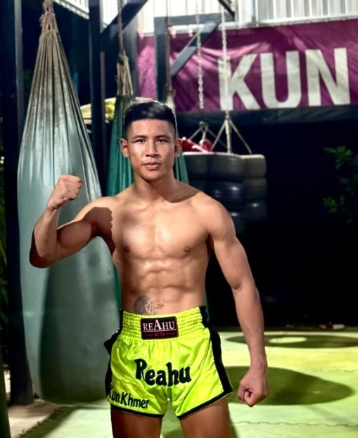
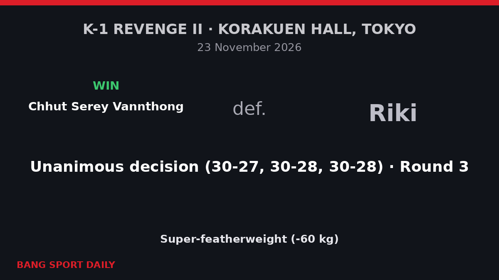

Kun Khmer champion Chhut Serey Vannthong outpoints Riki at K-1 Revenge II in Tokyo
The Cambodian won all three scorecards at Korakuen Hall, the latest Kun Khmer fighter to make his mark in K-1's super-featherweight division

Cambodian Kun Khmer champion Chhut Serey Vannthong beat Japan's Riki on Monday, 23 November, by unanimous decision at K-1 Revenge II at Korakuen Hall in Tokyo. The judges scored the three-round super-featherweight (-60 kg) bout 30-27, 30-28 and 30-28.
The 26-year-old from Battambang came to Tokyo as the ISKA Kun Khmer Intercontinental super-featherweight (-59 kg) champion, with a record of 84 wins (33 by knockout), 13 defeats and 3 draws, according to Japanese magazine Gong Kakutogi. He also won Kun Khmer gold at the 2023 SEA Games in Phnom Penh. Both fighters made weight the day before: Riki at 59.7 kg and Chhut at 59.9 kg.
How the fight was won

Chhut set the pattern early with his kicks. In the first round he threw repeated left kicks, then used right low kicks and calf kicks to unsettle Riki's stance, switching to the body with his left leg. Riki, a karate-trained fighter from K-1 Gym Meguro Team Tiger, answered with right hooks and front kicks.
Riki pressed forward with his jab in the second round, but Chhut kept scoring with body kicks, straight rights and a jumping knee. In the third, the Cambodian landed a left body kick and a right knee early, made Riki dip with a punch that the referee ruled a slip, and finished the fight with a straight right and a right uppercut. There were no knockdowns, but the cards showed a clear win.
At the weigh-in the day before, Chhut kept his message short: "My opponent is strong, but I want to win for myself."
The third Kun Khmer fighter to make an impact

Chhut was announced as K-1's third Kun Khmer challenger of the year. In September, Lorn Panha beat Japan's Kazuki Matsumoto at K-1 World MAX 2026 to reach the World MAX final tournament, where he meets Zack Pankhurst in the quarter-finals in Yokohama on 29 December. Thun Menghong also gave Japan's Tomoya Yokoyama a hard fight in a bout Japanese media described as fierce.
Chhut's win now puts a Cambodian fighter in K-1's super-featherweight picture. Yokoyama holds the K-1 interim super-featherweight (-60 kg) title, which he won with a first-round knockout of Yuta Matsuyama on 31 May.
What comes next
K-1 has not yet announced Chhut's next fight. A win over an established Japanese fighter, scored clearly by all three judges, is the kind of result that usually earns a step up in opposition, and Cambodian fans are already hoping it leads to a title opportunity. For now, Chhut returns home as the latest proof that Kun Khmer fighters can win under K-1 rules, which ban elbows and limit clinching, two of Kun Khmer's main weapons.
K-1 Revenge II, Korakuen Hall, Tokyo, 23 November 2026 — Fight 5, super-featherweight (-60 kg), 3 x 3 minutes:
Chhut Serey Vannthong (Cambodia, Rahu Club) def. Riki (Japan, K-1 Gym Meguro Team Tiger) by unanimous decision (30-27, 30-28, 30-28).